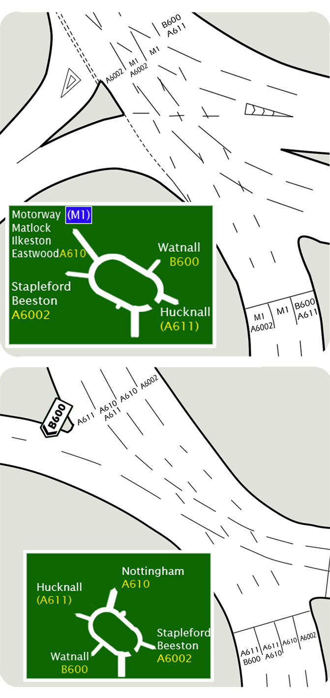

On one out of five driving test you will be asked to drive independently by following a series of traffic signs. This will give the examiner the opportunity to assess your ability to drive safely without regular prompts.
The examiner may ask you to follow the signs for a particular destination. You might be asked to navigate toward a place or to follow a particular road or both. For example:
"Follow signs for the B600, Watnall".
Look well ahead at road signs and markings to negotiate the route. If you need to change lanes or turn, do so safely with the full MSM procedure.
If you make a mistake and find yourself going off course, try to get back on route safely. If this isn’t possible, go off route and let the examiner direct you back on course. You won’t fail your test for this but could easily fail for switching lanes at the last minute without checking your mirrors. What’s more, this could cause a serious accident!
Below are examples of road signs and markings. The road signs are situated well before the junctions and the road markings are regularly placed to enable easy navigation.
Where there is more than one lane heading your way, try to use the leftmost one.
